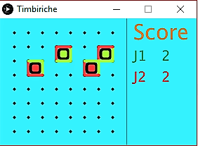
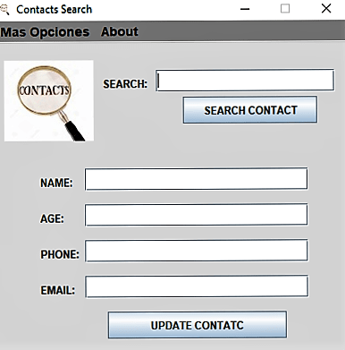

Las siguientes son imágenes de proyectos creadas a partir de la obtención de conocimiento en diferentes áreas y paradigmas de la programación al igual que la pagina donde estas se presentan, tales como por ejemplo; programación estructurada,POO(Programación orientada a Objetos), Desarrollo Web, con diferentes tecnologías tales como; Java, C++, HTML, CSS, a lo largo seguiré subiendo nuevos y mas avanzados proyectos al entrar a la imagen podrán ver el código en mi repositorio de GitHub y muy pronto estableceré una opción para descargar el aplicativo para que podáis verlo en acción.
- 


- 